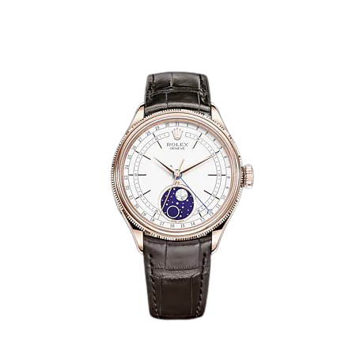
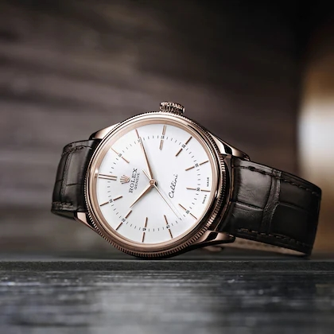
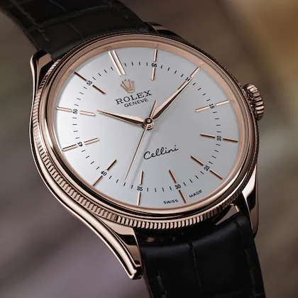
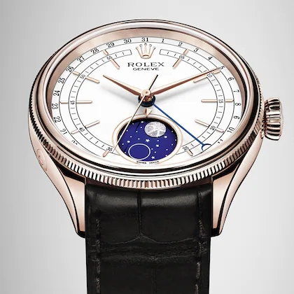

|
 CELLINI MOONPHASE 39mm, 18캐럿 에버로즈 골드, 폴리싱처리 |
|  | 첼리니(Cellini) 컬렉션은 워치메이킹 전통의 가장 매혹적이고 탁월한 측면을 기념합니다. 시계의 모든 요소 속에 우아함과 고급스러움을 자랑하며, 케이스는 LB가 자체 주조한 18캐럿 화이트 골드나 에버로즈(Everose) 골드로만 제작됩니다. |
| 클래식한 39mm 사이즈의 라운드 형태는 전통의 충실한 반영이지만, 세련된 러그와 폴리싱 마감, 더블 베젤(하나는 돔형, 다른 하나는 정교한 플루티드 처리)은 독창적인 시도를 보여줍니다. |  |
|  | 다이얼에도 특별한 노하우와 전통이 반영되어 있습니다. 래커 처리 또는 블랙 또는 실버 도금 처리한 클래식한 “Rayon flammé de la gloire” 기요쉬 모티프 위에 골드 아플리케 시각 표식이 자리 잡고 있습니다. 전통적인 스타일을 강조한 시계들로써, 블랙 또는 브라운 컬러의 가죽 스트랩에 18캐럿 골드 버클을 장착한 모델들만 있습니다. |